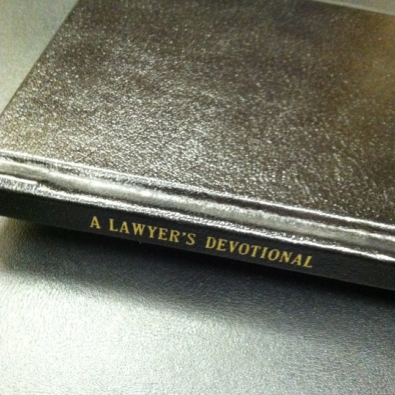

About
|  | This one-of-a-kind 96-page scripture compilation makes a great gift for the Christian lawyer, judge or law student, with specially selected verses for every day of the year to meditate upon law, justice, equity, mercy, compassion, judgment, prudence, wisdom, perseverance, and salvation as reflected in the Holy Bible. |
| Available in sleek leather hard cover or cloth bound. | |
| Just as in the app, the devotional offers a new verse each day for meditation. All scripture quotations are from the English Standard Version (ESV) of the Bible. Buy A Lawyer's Devotional: Daily Scripture for the Legal Professional here. | |
| Wm. Marc Reese, Attorney at Law. Visit the Timber Lawyer's link for more information. |